A feed of games you can play
Amigos is a social app shaped like a short-video feed, where every item is a game. You swipe, play, chase your friends' scores, watch each other, and make your own games by describing them.
This handbook explains how the app works, how it is designed, and how it is built. It is written for three readers:
- Anyone who wants to understand the product. Read "How the app works".
- Designers. Read "Design system" and "Game interface".
- Engineers and AI assistants. Read "Game interface" and "Technical". The same rules are in the repository as
CLAUDE.mdanddocs/GAME-INTERFACE.md.
Vocabulary
| Word | Meaning |
|---|---|
| Cade | One game in the feed. |
| ReCade | Your own version of someone else's Cade. The original creator stays credited. |
| Run | One attempt at a Cade. |
| Game DNA | The settings that define a Cade: type, look, what falls, speed, lives. |
| Look | Colour and light only. Changing it never changes rules or scores. |
| Credits | What creating costs. Everyone starts with 100. |
| Squad | Your friends. |
| Face cam | Filming yourself with the front camera while you play. |
| Posted run | A filmed run shared to the feed as its own page. |
| HUD | The interface drawn over a game: score, lives, progress, controls. |
"Cade" and "ReCade" come from the app's earlier name, Tokcade. Whether to rename them is an open decision.
Principles
- The preview is the game. A feed card is the real game playing itself. There is no trailer.
- Retrying is one tap. "Again" is the first button after every run.
- You chase the next person, not a distant record. The interface always names who is just ahead.
- Making starts from an idea. Never from technical settings or prompt-writing skill.
- Looks are free. Rules cost credits.
- Honest about limits. Game types the engine cannot make are marked "Soon", not faked.
- One interface for every game. Graphics change; the place for score, lives and controls does not.
App map
Five tabs sit at the bottom. The middle one opens the create flow over whatever you are doing.
| Tab | What it is for | State |
|---|---|---|
| Arcade | The feed. Swipe between games and posted runs, play any of them. | Sample data |
| Live | Watch someone's run as it happens. | Sample data |
| Create (+) | Describe a game, adjust it, test it, publish it. | Built |
| Squad | Friends, challenges and a weekly league. | Sample data |
| You | Your games, best scores and credits. | Built |
A run takes over the screen: the tab bar and the feed's own controls step aside until you leave.
Loading screens Built
Each launch shows one of six loading screens, each drawn in the style of a different era of games and each with its own short tune. The same style never appears twice in a row. It lasts 2.6 seconds; a tap skips it. Tapping the logo in the feed replays one.
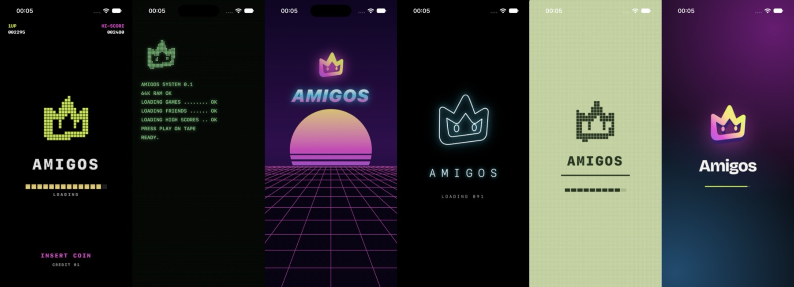
Left to right: coin-op, home computer, eighties neon, vector, pocket console, present day. Unchecked the tunes and the animations in motion.
Arcade feed Sample data
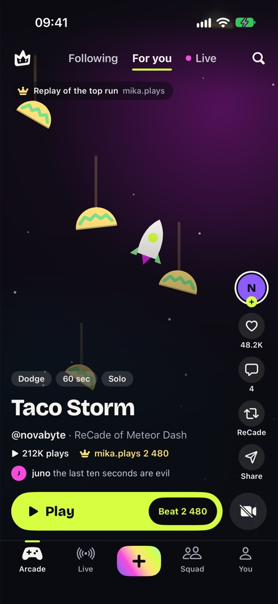
The feed is a stack of full-screen pages. Swipe up for the next one. Each game page shows:
- The game itself, replaying the top scorer's run, silently.
- Who made it, its tags, title and how many times it has been played.
- The score to beat and the latest comment.
- A side rail: follow the creator, like, comment, ReCade, share.
- Play, the one wide button, with the score to beat on it.
- The camera button beside Play, which turns face cam on or off for your next run.
Double-tap the game to like it. Only the page you are looking at runs its game; the others are paused.
The tabs at the top (Following, For you, Live) are in place, but both lists show the same five sample games.
A run Built
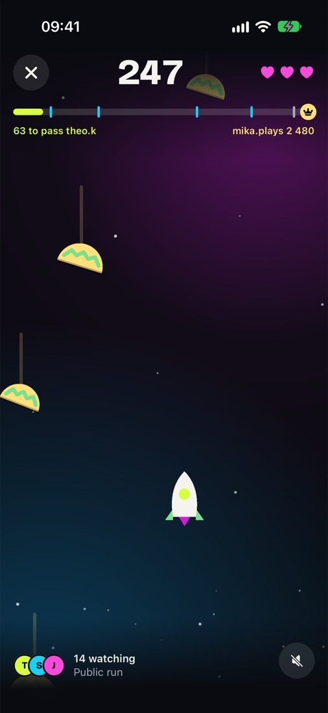
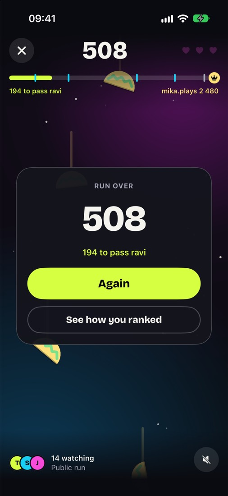
Tapping Play does not open a new screen. The card's text slides away and the same game is handed to you. The feed cannot be swiped during a run; you leave with the close button.
- Top: score in the middle, lives on the right, close on the left.
- Progress bar: fills as you score. Ticks mark other players (friends in cyan). The caption names the next person and the gap.
- Passing someone gets a sound, a haptic buzz and a "Passed ravi" callout.
- Bottom: who is watching, a mute button, and a recording indicator when face cam is on.
Two game types exist. Dodge: drag anywhere to steer; things fall; you have lives. Stack: tap to drop a sliding block; whatever overhangs is cut off; one miss ends it.
The layout of everything drawn over a game is fixed by the HUD standard.
Result Sample data
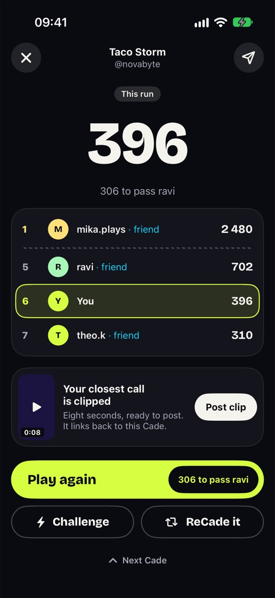
The result comes in two steps so that retrying stays instant:
- The "Run over" card appears the moment you lose: your score, the gap to the next person, and "Again".
- "See how you ranked" opens the full result: your rank, the people just above and below you, and buttons to play again, challenge a friend or ReCade the game.
If the run was filmed, both steps offer to watch the clip or post it. Without a film, the result shows a placeholder "closest call" clip that is not real. Unchecked the full result, comments and ReCade were not reopened after the move from the web prototype.
Create Built
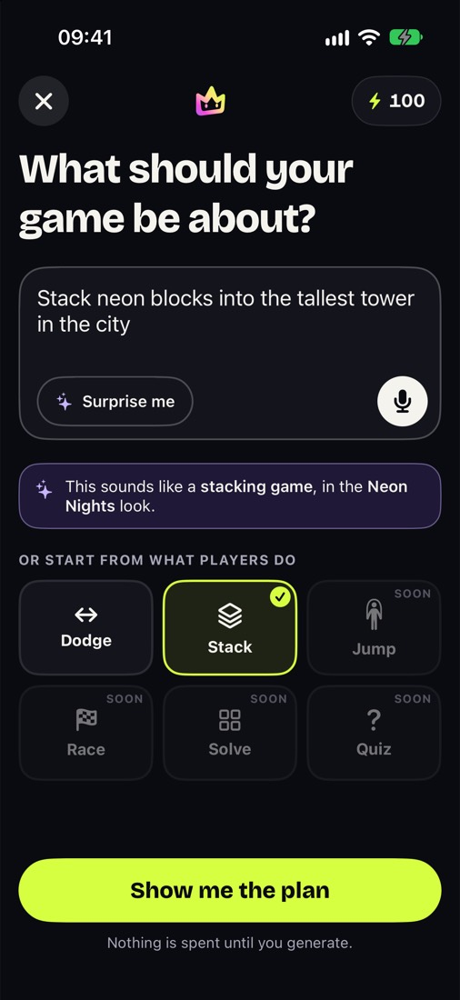
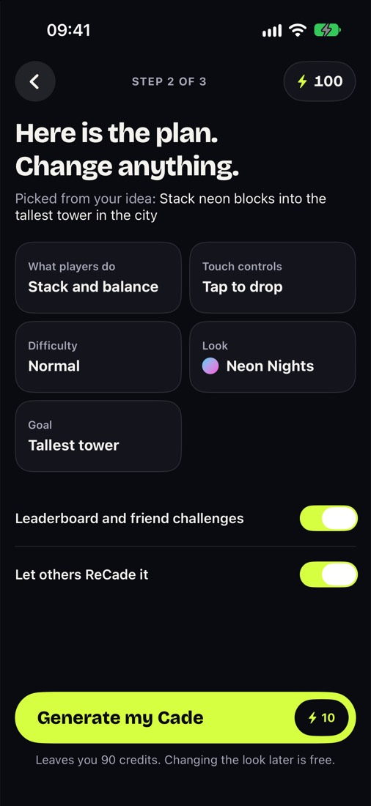
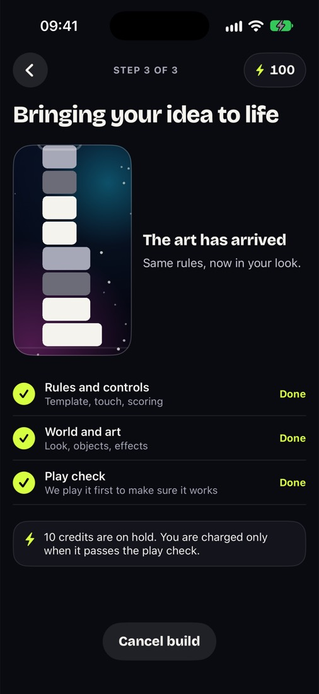
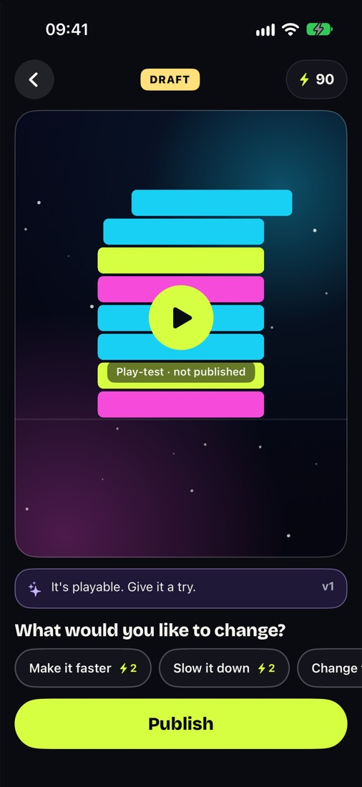
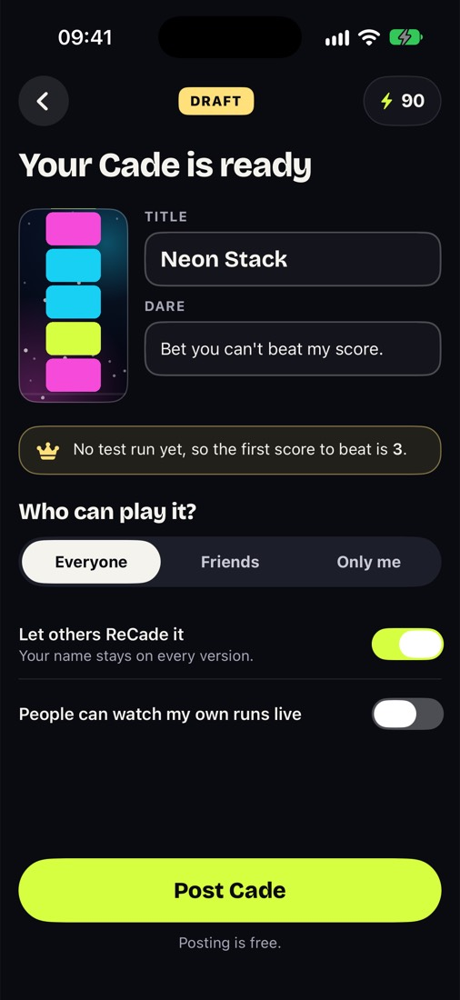
Making a game takes five steps and needs no knowledge of games.
| Step | What you do | What it costs |
|---|---|---|
| Idea | Say what the game is about. The app reads the idea and tells you what it understood. | Nothing |
| Plan | Review five choices: what players do, controls, difficulty, look, goal. Tap any to change it. | Nothing |
| Build | Watch it come together. Credits are held, and charged only if the play check passes. | 10 credits |
| Test | Play your game. Ask for changes with one tap: faster, slower, another look. | 2 per rule change; looks are free |
| Publish | Title, a dare, who can play, whether others may ReCade it. | Nothing |
The published game appears at the top of the feed and on your profile. ReCade opens the same flow starting from an existing game.
Live Sample data
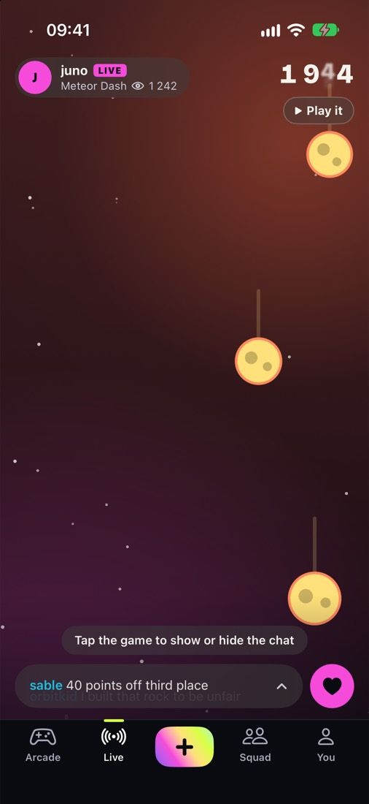
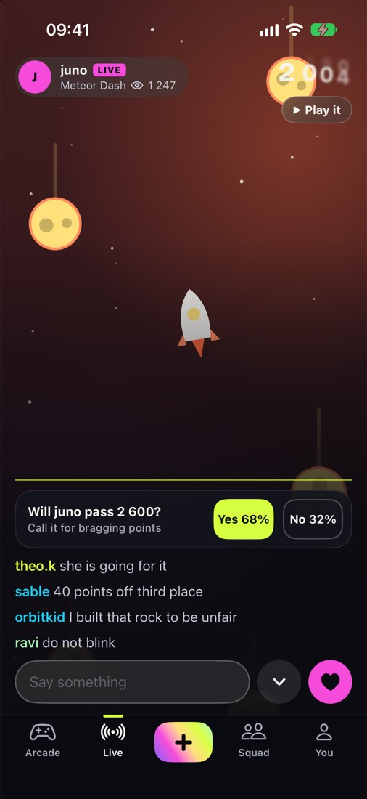
Live shows someone's run as it happens. It has two modes, and tapping the game switches between them:
- Watch gives the screen to the game.
- Join in brings up the chat, a prediction ("Will juno pass 2 600?") and a field to type in.
The panels fly in and out like a game interface, with a sound. The app remembers which mode you left it in. "Play it" in the corner takes you to the same game. The run and the chat are scripted; nothing is streamed.
Squad and You Sample data
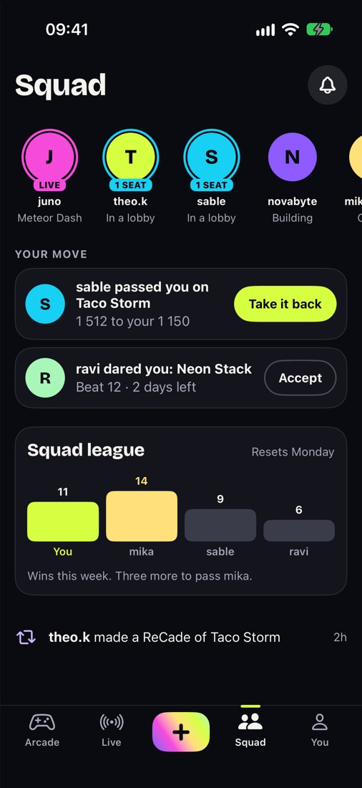
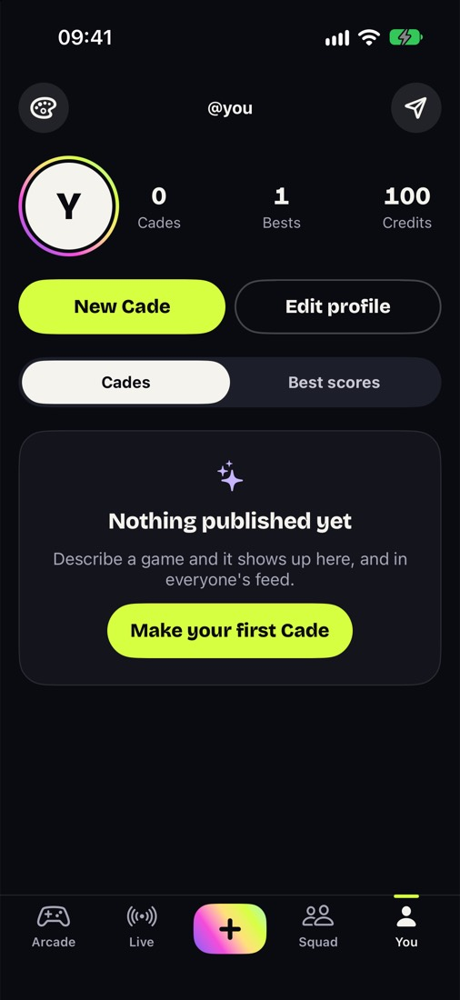
Squad shows friends who are playing right now, challenges that drop you straight into a run ("Take it back"), and a league that resets each Monday.
You lists what you published and your best score on each game you played. The palette button at the top left opens the design system as rendered by the app, and holds the hidden zone overlay switch.
Face cam and posted runs Unchecked
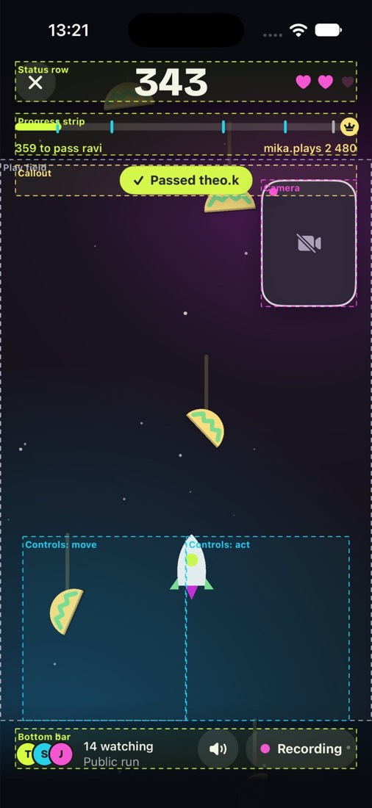
Face cam lets you film yourself and talk while you play, the way streamers do.
- Turn on the camera button beside Play. It turns pink.
- Tap Play. The first time, iOS asks for the camera, then for screen recording and the microphone.
- Your face shows in a bubble over the game. Drag it out of the way if you need to.
- When the run ends, filming continues for 1.6 seconds to catch your reaction, then the clip is saved.
- On the "Run over" card, Watch the clip or Post to feed.
A posted run becomes its own page at the top of your feed: the recording plays full screen with sound, under your name, the score, the game's title, and a Play button that opens that game with your score as the one to beat. Posted runs stay after you close the app.
Not built streaming your camera live to viewers; other people seeing your posted runs (they are stored on your phone only); a clean video without the score bar in it.
Credits Built
| Action | Credits |
|---|---|
| Starting balance | 100 |
| Generate a new game or a ReCade | 10 |
| Change a rule (speed, lives) | 2 |
| Change the look | 0 |
| Publish, play, like, comment | 0 |
Credits are never taken for a build that fails its play check. How credits are bought, refilled or earned is undecided, and the balance resets to 100 when the app restarts.
Logo and icon
The symbol is a crown with a face: play, winning, and a friend looking back at you. It always carries the brand gradient.
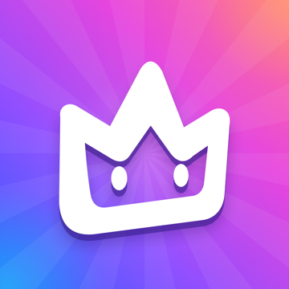
Symbol, app icon, and the one-colour version used small (the feed's top-left corner).
- Use the gradient symbol on the ink ground.
- Use warm white when it is smaller than 28 points or sits over a game.
- Keep clear space of half the symbol's width on every side.
- Recolour it with a single accent.
- Place the gradient version over a busy game.
- Stretch, rotate, outline or add a shadow.
In code: TKLogo(size:) draws it; TKLogoShape is the outline. The app icon is drawn by a script, ios/Tools/make-icon.swift, in standard, dark and tinted versions.
Colour
The ground is a near-black ink with three raised steps. Text is a warm white with two dimmer steps. Accents come from the gradient in the symbol.
Roles
Components never pick a raw hue. They pick a role, so a colour always means the same thing.
lime #D7FF41
pink #F64ADA
violet #8D5BFF
cyan #18CFF4
yellow #FFE07A
5-stop gradient
Prism is reserved for the create button, the logo, the profile ring and the icon. Stops: #7A59F9 0%, #F64ADA 30%, #FFE07A 55%, #D7FF41 78%, #A8F6B7 100%, running from bottom-left to top-right.
Ground and text
#0A0B10
#13141C
#1C1E29
#2A2C3A
#F4F3EE
#C9CAD6
#A6A8B8
ink0 at 55%
Lines are white at 10% (line) and 24% (lineStrong). Text on any accent is ink (onAccent), never white.
Looks
A look is the colour scheme of a game. It is separate from the interface palette and never recolours the interface. Seven exist:
Type
Two faces. Funnel Display (weight 800, bundled as a variable font, SIL Open Font License) for titles, scores and main buttons. The iOS system font for everything you read. This page uses Inter in its place.
- Apply a style with
.tkText(.title). For other sizes useTKFont.display(size)orTKFont.body(size, weight:). - Display sizes tighten their letter-spacing as they grow. The styles do this for you.
- Numbers that change (scores, credits) use fixed-width digits so they do not jiggle.
- Nothing is set smaller than 12 points; nothing smaller than 11 on a button label.
Layout and grid
Everything sits on a 4-point grid. One side margin, 16, is used on every screen.
| Token | Value | Use |
|---|---|---|
| TKRadius.sm | 10 | Tags, small tiles |
| TKRadius.md | 16 | Cards, notes |
| TKRadius.lg | 24 | Text areas, large cards |
| TKRadius.xl | 32 | Sheets, the run over card (28) |
| Capsule | full | Buttons, chips, pills |
| TKSize.hit | 44 | Smallest touch target, even when the visible control is smaller |
| TKSize.tabBar | 58 | Tab bar height, above the home indicator |
Screen structure
- Portrait only, one column, full width. Reference screen: 402 × 874 points. Smallest supported: 375 × 667.
- Full-bleed content (games, video) runs edge to edge behind everything. Text and controls stay inside the safe area and the 16-point margins.
- A dark fade sits behind text placed over a game, so it reads on any look.
- One primary action per screen, lime, full width, at the bottom where the thumb rests.
- Sheets rise from the bottom for secondary tasks (comments, look picker). Full-screen covers are for flows (create, a clip).
- Grids inside a screen use 8 or 10 points between tiles: three columns for type tiles, two for plan cards.
Motion, haptics, sound
Three springs
| Name | Response | Damping | Use |
|---|---|---|---|
| snappy | 0.26 s | 0.86 | Buttons and small controls |
| soft | 0.42 s | 0.86 | Sheets, screens, text sliding in and out |
| bouncy | 0.38 s | 0.56 | Celebration: a like, passing someone, "Go" |
All motion uses one of these (TKMotion.snappy and so on), so the feel of the app can be retuned in one file.
Signature transitions
- HUD entrance (
.tkHud): a piece flies in from an edge, small and out of focus, then lands sharp. Neighbours get rising delays so they cascade. Used when game interface arrives or leaves. - Sweep (
.tkSweep): a line draws outward from its centre. - Press: every button shrinks slightly under the finger and gives a light tap.
- Play: the card's text fades and drops away; the game stays exactly where it was.
Haptics
| Pattern | When |
|---|---|
| tap | Any button press |
| select | Switching a tab, chip or segment |
| thud | A block landing in a stack game |
| success | Passing someone, a new best, a like |
| fail | Something refused |
| hit() | Losing a life: one sharp knock with a short rumble |
| death() | The run ending: a heavier, longer falling pattern |
Sound
No audio files are bundled. Every sound is built from the game's own settings, so each game sounds like itself, including games made later.
- The look picks the instrument and scale.
- The falling object picks the hit sound.
- The game type picks which moments sound. In a stack game each block plays a note that climbs with the tower.
- Sound plays only during a run, on loading screens and when Live panels move. The feed is silent.
- It follows the ring/silent switch and mixes with your own music. A mute button sits in every run.
Unchecked nobody has yet confirmed how the sounds and haptics feel on a phone.
Icons
Icons are Apple's SF Symbols, named in one list (TKIcon) so a screen never reaches for a symbol by its raw name. Draw them with TKIconView(.heart, size: 17).
| Group | Names |
|---|---|
| Feed actions | play heart heartLine comment recade share search |
| Navigation | close chevronLeft chevronRight chevronUp chevronDown undo send plus |
| Tabs | gamepad gamepadFill live users usersFill user userFill |
| Status | crown eye bolt check alert bell sparkle |
| Media | sound soundOff mic camera cameraOff |
| Game types | dodge stack jump race solve quiz |
| Other | palette trash |
Sizes: 17 in the side rail, 18 in an icon button, 11 to 12 inside a label. Filled symbols mean "on" or "selected"; outlined mean "off".
Components
These are redrawn here in HTML to show their look and rules. The real ones are SwiftUI views in the AmigosDS package, and the app renders them on its own design-system screen.
Button TKButton
| Variant | Use |
|---|---|
| primary | The main action of a screen. One per screen. |
| secondary | The alternative beside or under a primary. |
| light | A positive action that is not the main one (Follow, Watch). |
| live | Anything live or filmed (Watch live, Post to feed). |
| ai | Making and ReCade. |
| ghost | Cancel and other quiet exits. |
Options: an icon before the title; block for full width; a trail, the dark pill at the right end that carries the stake ("Beat 2 480", a credit cost). Labels are verbs, one to three words.
Icon button TKIconButton
44 points across by default; 54 beside a large button. Variants: glass (over a game), solid, light, plain, action, live. Every one needs a spoken label for VoiceOver.
Chip, tag, avatar
- Chip (
TKChip): a choice or a quick request. May carry a credit cost in yellow. - Tag (
TKTag): a fact about something, never tappable. Tones: plain, glass, live. - Avatar (
TKAvatar): an initial on the person's colour. A ring marks the creator or a live friend.
Segmented control, note, card, toast
Beat 12 · 2 days left
- Segmented (
TKSegmented): two to four exclusive options. - Note (
TKNote): the app explaining itself. Violet when it is about making. - Card (
.tkCard()): groups related content. Use it to set one thing apart, not on every block. - Toast (
TKToast.show): confirms what just happened, in the past tense, for two seconds. - Number (
TKNumber): a value that rolls when it changes. Sheet (.tkSheet()): the standard bottom sheet.
Tab bar TKTabBar
Five places, the create button in the middle on the prism gradient, whose colours drift slowly (one round every 6 seconds, still with Reduce Motion). The selected tab has a lime bar above it and a filled icon. The bar hides during a run.
The HUD standard
Every game looks different. The interface over it does not. A player who has played one Amigos game already knows where to look and where to put their thumbs in the next.
The layer over a game is called the HUD (heads-up display). This standard fixes where each kind of information and control goes. Any person or AI building a game follows it exactly. If a game needs something the standard does not allow, the game changes, not the layout.
- The game owns the picture. The app owns the HUD. A game never draws its own score, lives, timer, exit or messages.
- Every kind of information has one fixed slot.
- Controls live in one zone, at the bottom, under the thumbs.
- The play field keeps at least 60% of the screen height.
- A slot that is not needed stays empty. Nothing else moves into it.
| Zone | Position |
|---|---|
| A Status row | safe top + 4, 44 high |
| B Progress strip | safe top + 60, 46 high |
| C Callout | safe top + 116, 34 high |
| D Camera dock | safe top + 132, 104 × 138 |
| E Play field | safe top + 110 to safe bottom − 60 |
| F Control zone | lowest 200 of the play field |
| G Bottom bar | safe bottom − 52, 44 high |
Side margin for every zone: 16. "Safe top" and "safe bottom" are the device's safe-area edges, so this holds on every iPhone. In code the numbers live in TKHud (GameHUD.swift) and must be read from there.
The app can draw these outlines over a real run. The switch is hidden: You tab, palette button, bottom of the page, "Show game interface zones". The face cam screenshot shows it on.
Slots
A. Status row
| Slot | Width | Content | Rules |
|---|---|---|---|
| Exit | 44 | Close button | Always present, always top left. Leaves the run. |
| Left stat | up to 48 | Time left, level or combo | Optional. One value. Not built |
| Score | the rest | The one number the run is about | Always present. Display font, 44, shrinks to 28. No label. |
| Right stat | up to 76 | Lives, ammo or moves | Optional. Up to 3 icons, else an icon and a number. Lost units dim. |
A timer always goes left, even with no lives. The right slot is only for things you lose or spend. Never two values in one slot.
B. Progress strip
One bar: how far you are, and who is next. Fill grows with your score; full width is the top score. Ticks mark other players, friends in cyan. Left caption is the gap to the next person, in lime. Right caption is the top score, in yellow. A game cannot hide it or use it for anything else, such as health or a boss bar.
C. Callout
Short feedback: "Passed ravi", "Perfect", "New best". One pill, one line, 24 characters at most, 1.5 seconds at most, one at a time. It never takes touches.
D. Camera dock
The face cam bubble, 104 × 138, top right of the play field. The player can drag it anywhere in the play field except the control zone. A game keeps nothing essential fixed underneath it.
E. Play field
The game's picture fills the whole screen behind the HUD. What the player must see to play stays inside the play field. Labels that belong to an object in the game (a damage number over an enemy) are allowed; they must not repeat HUD information.
G. Bottom bar
Left: who is watching, never tappable. Right: at most two 44-point utilities (sound first), then the recording indicator. No game controls, no score, no game messages.
Things that appear in the middle
| Overlay | Where | How long |
|---|---|---|
| "Go" or a countdown | Centre of the play field | 0.7 s; a 3-2-1 count is allowed |
| Control hint | Centre of the control zone | 2.5 s on a first run of a game type Not built |
| Run over card | Centre of the screen, 28 margin | Until the player chooses. "Again" is first. |
Only one at a time. There is no pause menu: runs are short, and leaving is the Exit button.
Controls
The control zone is the only place for on-screen controls. It is split down the middle: movement on the left, actions on the right. A left-handed setting mirrors the halves.
| Part | Size | Rule |
|---|---|---|
| Stick base / knob | 120 / 56 | Left half only |
| Primary action | 72 | Nearest the bottom-right corner; may be lime |
| Secondary action | 56 | Above and to the left of the primary |
| Any control | ≥ 44 | At least 24 from the side edges; translucent glass |
A game picks exactly one scheme from this list and does not invent its own. Use the first one in the list the game can be played with.
| Scheme | The player | Visible controls | Good for |
|---|---|---|---|
tapAnywhere | Taps anywhere | None | Stack, jump, timing Used by Stack |
dragAnywhere | Drags; the character follows the movement | None | Dodge, catch, steer Used by Dodge |
swipe | Swipes in four directions | None | Lane runners, sliding puzzles |
direct | Touches the game's own pieces | None | Puzzles, matching |
leftRight | Holds a left or right button | One button in each half | Racing |
stick | Steers with a stick | Stick, left | Free movement |
stickAndAction | Steers and fires or jumps | Stick left, one or two buttons right | Shooters, platformers |
answers | Picks an answer | 2 to 4 full-width buttons | Quiz |
Gesture schemes come first because they keep the picture clear and need no learning. Visible controls are defined here but Not built.
Layers, back to front
- Backdrop (the look's gradient and light)
- The game
- Dark fades behind the top and bottom bands
- HUD: status row, progress strip, bottom bar
- Controls
- Camera bubble
- Callouts, "Go", hints
- Run over card
- App messages
A game only ever draws in layers 1 and 2. The HUD uses the design system's colours and type, never the game's look.
Limits and checklist
- Nothing above safe top or below safe bottom.
- Nothing permanent in the play field except the camera bubble and controls.
- Play field never under 60% of screen height.
- At most 4 values: score, two stats, the progress strip.
- At most 3 controls: one stick, two buttons.
- Touch targets at least 44 × 44. Text at least 12.
- One callout and one centre overlay at a time.
- HUD positions never move during a run.
- Draw its own score, lives, timer, exit, pause or game-over screen.
- Place controls outside the control zone.
- Hide, move, resize or recolour a HUD slot.
- Use the progress strip for anything but progress against players.
- Shake, flash or blur the HUD. Shake applies to the game only.
- Require the phone to be rotated.
What a game tells the HUD
| Value | Required | Shown in |
|---|---|---|
score | Yes | Score slot, progress strip |
over | Yes | Triggers the run over card |
lives (or ammo, moves) | No | Right stat |
timeLeft, level or combo | No | Left stat |
callout(text) | No | Callout slot |
controlScheme | Yes | Decides what the control zone shows |
Before a game ships
- The game draws no numbers or text that repeat the HUD.
- One control scheme from the list, and it is the simplest one that works.
- The player's character and the next threat are always visible inside the play field.
- Nothing essential sits under the camera dock or, with visible controls, in the control zone.
- Played on the smallest phone (375 × 667): nothing overlaps; play field still 60% or more.
- Played over the lightest and darkest look: the HUD reads on both.
- Time or level is on the left; things you lose are on the right.
Architecture
A native iPhone app. SwiftUI for the interface, SpriteKit for the games, iOS 17 or later, no third-party dependencies.
ios/
project.yml XcodeGen spec; the .xcodeproj is generated from it
run-on-iphone.sh Build, install and launch on a connected iPhone
Tools/make-icon.swift Draws the app icon
AmigosDS/ Design system package
Tokens Typography Motion Icons GameHUD Components/
Amigos/
AmigosApp.swift Entry point
Model/ GameDNA Data (sample people and games) Store (app state)
Game/ GameScene DodgeScene StackScene GameAudio FaceCam
Screens/ RootView SplashView FeedView ReelView HudView ResultView
CreateFlow LiveView SocialViews SystemView- The design system is its own Swift package, so it can change without touching the app. Everything in it is prefixed
TK. - State is one observable object,
Store, passed through the SwiftUI environment: games, likes, follows, best scores, credits, the selected tab, whether a run owns the screen, and what is being presented. - Saved between launches: posted runs (videos plus
reels.jsoninDocuments/Clips) and a few settings (soundOff,faceCamOn,liveJoined,liveHintSeen,lastSplash,hudGuide). Everything else resets. - Setting keys must not contain dots; a dotted key made a setting stop updating.
Game DNA
A game is a small value, not code. The create flow edits it, the engine draws it, and the sound is derived from it.
struct GameDNA {
var template: Template // .dodge or .stack
var look: LookID // colour and light: space, candy, neon, sunset, crt, ice, mono
var hazard: HazardKind // what falls: taco, meteor, drop
var speed: Double // 1 is normal
var lives: Int
}Why it matters. The App Store does not allow apps to download and run new code. Because a generated game is only data rendered by templates already in the app, nothing executable is downloaded. It also keeps every generated game playable: the AI can only choose among things the engine knows how to run.
To add a game type: add a case to Template, write a GameScene subclass, return it from GameView.make(), and pick its control scheme from the list.
Engine and sound
GameSceneis the shared base. It owns the loop, two modes and reporting. Demo mode is what the feed shows: the game plays itself, silently. Play mode is a real run. Switching mode resets the run.GameViewis the SwiftUI wrapper. The same view serves the feed preview and the run, which is why tapping Play feels like a change of state and not a change of screen.- Only the visible card runs. Each scene runs for half a second when created, so a paused card still shows a real frame.
- Reporting. A scene writes score, lives and "over" to a
GameSession. The interface observes it. Score updates are limited to about 14 a second; lives and game over are sent at once. - The backdrop (gradient and glows) is drawn in SwiftUI under a transparent SpriteKit view.
GameAudiobuilds each sound from sine, triangle, square, saw, glass and noise layers, with an attack, a decay and an optional pitch sweep. Results are cached and prepared before a run so the first hit is instant.
Recording
FaceCam films the player and saves a run as one video.
- The front camera (
AVCaptureSession, video only) is shown in the bubble. - ReplayKit (
RPScreenRecorder) records the app's screen with the microphone on. Because the bubble is on screen, the face is in the picture. Game sound is captured as app audio. - Recording starts before the run, so a permission prompt never covers a running game.
- While recording, audio switches from ambient to play-and-record, so the silent switch is ignored during a filmed run.
- The file is checked after saving; an empty result (as on the simulator) is reported as a failure, not shown as a clip.
- Leaving a run early throws the recording away.
A posted run is a Reel: the clip's file name, the game, the score and the date. The feed lists reels first, then games.
Project and build
| To do this | Run this |
|---|---|
| Regenerate the Xcode project | cd ios && xcodegen generate |
| Open it | open ios/Amigos.xcodeproj |
| Install on a connected iPhone | ios/run-on-iphone.sh |
| Redraw the app icon | swift ios/Tools/make-icon.swift ios/Amigos/Assets.xcassets/AppIcon.appiconset |
- Repository:
github.com/odaydesign/amigos(private), branchmain. - Bundle ID:
odaydesign.Amigos. - The written docs are in
docs/: STATUS, PRODUCT, ARCHITECTURE, DESIGN-SYSTEM, GAME-INTERFACE, DECISIONS.CLAUDE.mdat the root gives AI assistants the rules to follow. - The first build was a web prototype (
src/,design-system/). It is kept for reference and no longer maintained.
Status
| Area | State | Notes |
|---|---|---|
| Feed, play, run interface | Built | Five sample games; two game types. |
| Create flow | Built | Real flow and a real playable result; generation is simulated. |
| Live, Squad | Sample data | Scripted, no real people. |
| Loading screens | Built | Six styles. |
| Sound and haptics | Unchecked | Run without errors; feel not confirmed. |
| Face cam, posting a run | Unchecked | Needs a real phone to confirm the clip. |
| Result, comments, look picker, ReCade | Unchecked | Compile; not reopened in the native app. |
| Other screen sizes, VoiceOver, Dynamic Type | Unchecked | One simulator size and one phone only. |
| Accounts, saving, real friends and scores | Not built | No server. |
| Real AI generation | Not built | |
| Jump, Race, Solve, Quiz | Not built | Shown as "Soon". |
| Visible controls, left stat, control hint | Not built | Defined in the HUD standard. |
| Live streaming, multiplayer lobby, search, voice input, notifications | Not built | |
| Onboarding, failed build, out of credits | Not built | Designed on the canvas only. |
Open decisions
- The name. Amigos is in use but was never checked for trademarks, App Store conflicts or domains. It is a common word, so expect conflicts.
- Words for a game and a remix. "Cade" and "ReCade" came from the old name.
- Bundle ID. Settle it before any App Store work; changing it later makes a new app.
- Credits. Pack prices, the refill rule, and whether creators earn credits.
- Loading screen length. 2.6 seconds on every launch could be shorter, or once a day.
- Tab bar while watching live. Hiding it would give the game the whole screen.
- The recorder. Keep screen recording, or build the custom one for a clean showreel and live streaming.
- Multiplayer and spectating. The original brief places both after the first release.